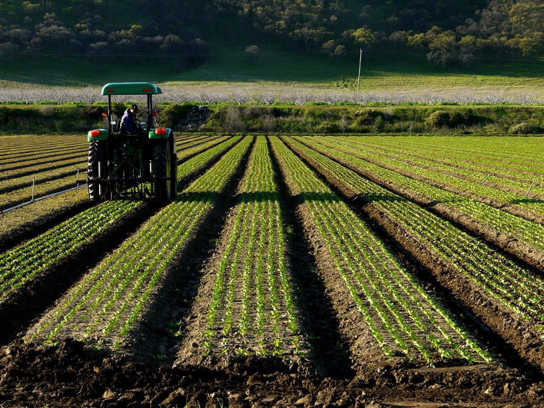
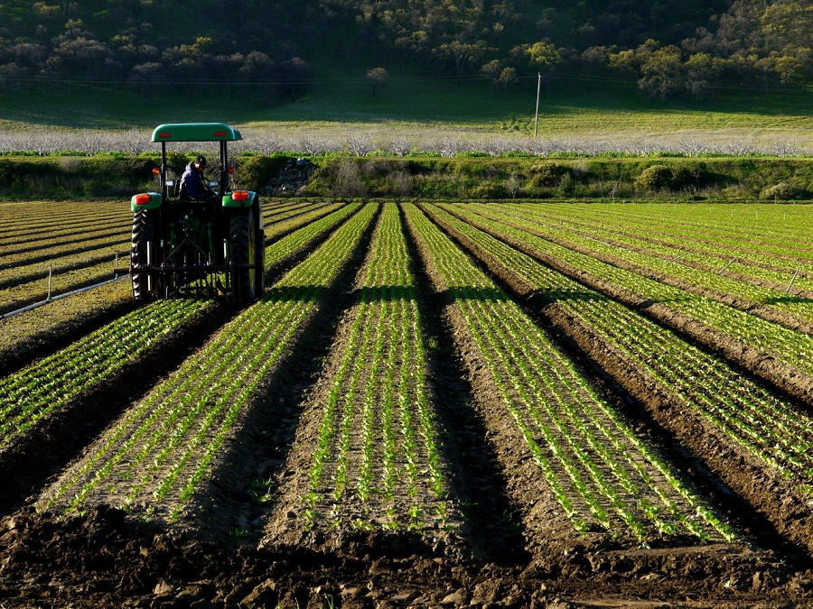

История нашей базы
Научно-производственная база O.A.S.I.S: лаборатория будущего агрономии
Наша селекционная работа была бы невозможна без современной инфраструктуры. База O.A.S.I.S — это не просто поле и склад, это высокотехнологичный комплекс полного цикла, расположенный в экологически чистом районе
История базы началась в 2015 году с небольшого опытного участка и веры в силу науки. Сегодня — это 500 гектаров демонстрационных и селекционных полей, автоматизированные тепличные комплексы и лаборатория мирового уровня.
Что представляет собой база сегодня:
- Селекционно-семеноводческий центр: Здесь мы ведем кропотливую работу по созданию гибридов подсолнечника, пшеницы и редких культур, таких как чиа и киноа. В наших крио-камерах хранится уникальный гермоплазм — золотой запас генетического материала.
- Полевой стационар: Опытные делянки, где будущие сорта проходят испытания на засухоустойчивость, продуктивность и иммунитет к болезням. Каждое растение под пристальным наблюдением агрономов и датчиков умного земледелия.
- Лаборатория биотехнологий: Сердце базы. Здесь с помощью методов in-vitro и маркерной селекции мы ускоряем создание новых сортов, делая сельское хозяйство эффективнее и экологичнее.
База O.A.S.I.S — это место, где зарождаются урожаи будущего. Мы открыты для партнеров и всегда рады показать, как наука работает в поле.